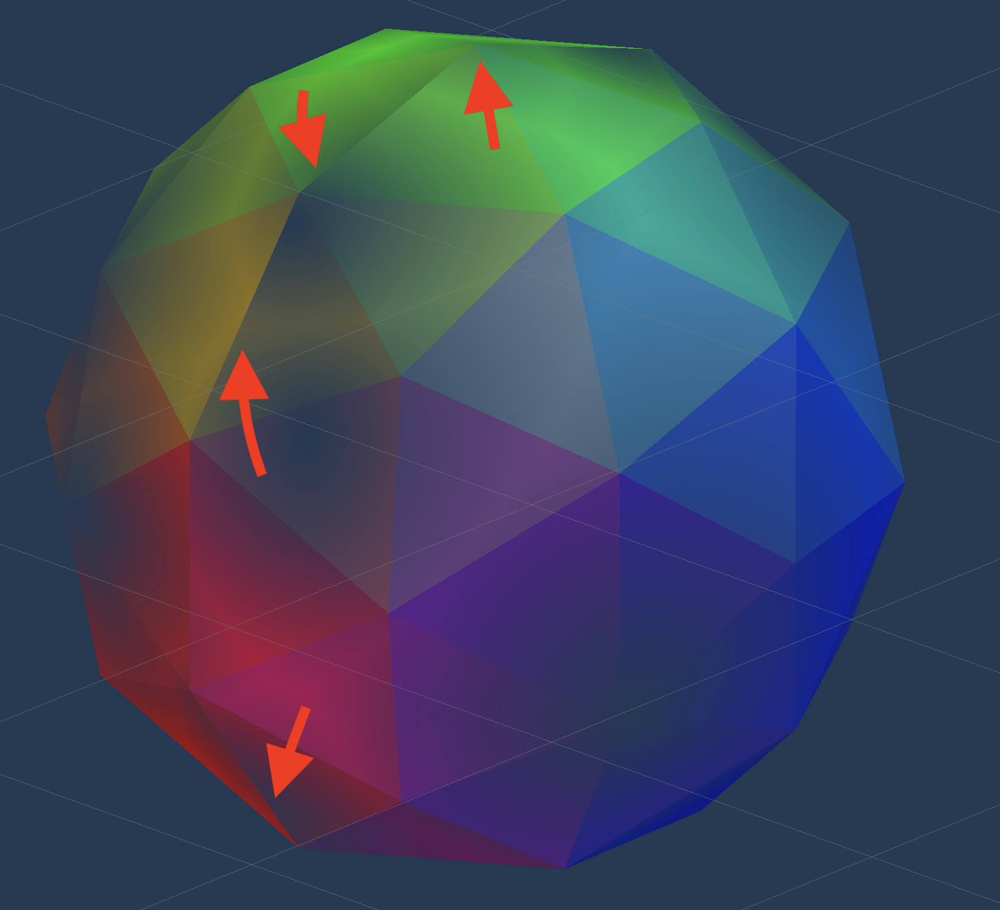

In my upcoming rhythm game hyperRunner2.5D I am developing a boss fight that will take the form of a street race. I think it would be really cool if we had some smoke effect coming out the back of the cars. Let's make some wisping smoke! We could make our particle system emit a CUBE with our own custom SMOKE shader. The smoke would use some VORONOI noise or some texture to decide which parts decay faster, decay meaning the alpha value goes down. It will look like a wisp or puff. At the end of the singular smoke block once all the smoke is out and alpha is 0, the particle system will destroy the particle. I'm thinking something that looks like Tears of the Kingdom here.
The smoke here is awesome, just the right blend of cartoony and realistic. I'm going for an effect that looks something like this, except play with alpha of the smoke to get a cool transparent smoke effect.
I’m deciding to start with a sphere of some sort as the bash mesh for the smoke. A cube is proving to be very pointy, and not really what smoke looks like. I’m using voronoi noise for the alpha value of the shader. The shader also is going to be an unlit shader, we don’t need this smoke interacting with light in any way for our case. We are displaying normal as the color value at the moment.
This is what the unity sphere looks like.

The result of the shader looks like this

This looks pretty good, but there is some squishing at the top and a visible seam.

Let’s see if we can get rid of this using a icosphere, I marked a seam horizontally across the sphere and Unwrapped it to get these UVs




Now this actually looks really good. The seam is still there, vertically, as seen with the red arrows. But it is less noticeable. Is this maybe because there are less vertices, so the texture isn’t as precise, so the seam isn’t as visible? The unity sphere had many more vertices.
I added time to the angle offset for the voronoi noise and got a super interesting effect (insert voronoiNoiseWithAngleAsTIme and voronoiNoiseWithAngleAsTIme2)
I just tried to displace each vertex along it’s normal vector, and learned that if the mesh is not shaded smooth, each face has a different vertex and a different normal, so I get this very weird effect

Now that I shaded it smooth, it looks like this below. It looks a lot better, but not perfect. The issue I am running into is that it splits across the UV seam. Maybe there is a way to achieve this effect without the seam.

Now this below looks a lot better. Instead of using UV for the input to the gradient noise to displace the vertex, we just use vertex position x and y.

I also use gradient noise to change the position of this overtime. I use the Position node as the input to the UV for the gradient noise. This gives a wobbling effect while the cloud is moving.
I also make the smoke disappear completely after a certain amount of seconds that the user defines. The alpha of the overall cloud will go down until it reaches 0. It would be nice to auto delete the object once it gets to this point, I can work on this next. One thing to note that I need to fix is that right now I am just using Time, and because Time is from start of first frame of the scene, not when the object is created, I need to make a custom script here to manage the time since this object has been created and pass that down as a property. This is TODO for next time. EDIT: This system actually may not work, as the particle system that I am trying to use for the smoke seems to only allow particles to be a mesh and shader, not prefab.
One really sweet thing is that using Unitys particle system, I can check Color Over Lifetime, and that will be passed into vertex shader as vertex color, which is how I can make the color go from black to white. Also, depending on how “white” the particle is at any point, that is how I determine the alpha, the more white the particle is the more transparent it is, that makes it look like the smoke is completely dissapearing. Also added a small negative gravity to make it seem like it’s floating up.
After messing around with size over lifetime, my material property deform scale and deform speed, and upping the speed and emmision rate of the particles, we improve the visuals a ton.
This is a demonstration of how the smoke looks in game. It looks pretty good.
The smoke particle system simulation is in local space, as you can see in the below video. The particle system is a child of the boss car, so it almost looks like the smoke is moving with the car, rather than leaving it behind.
We can remedy this by changing the particle system from local space to world space. As you can imagine, we will need to do some tweaking to the amount of smoke emitted, as it will look like much less smoke if we put this in world space and the car is moving fast.
I went ahead and quickly modelled some headlights for the car in blender.

This is the final product
Here is the full shader, let's split it down the three main sections


The source for the Shader Graph file can be found here In summary, the PURPLE section is to support the Curved World effect of the game. More on that in my Water Shader post. This was not anything new.
The GREEN section deforms each vertex by the normal. This is what gets us that "wobbling" effect of the cloud shifting shape over time.
The ORANGE section is what animates our texture. This is where we apply the animated voroinoi noise, and also apply some logic to lower the alpha value of the cloud the closer the color gets to white.
This whole shader was put together with Unity particle system and Unity Shader Graph. That's pretty nuts. It's crazy how much you can achieve visually in the editor without writing a line of code. It's interesting because with the increasing popularity of code generating AIs, systems built in the editor (or just visual editors) become harder to use. You can't use Copilot for ShaderGraph or in the Unity Editor (or at least I don't think). I'm not sure if anything like this exists yet, and even if it does, it would need to support so many different types of editors. What data could you even train on? In the near future, I wonder if less skilled programmers will start actually prefer to use HLSL or GLSL instead of ShaderGraph, just because you can use AI as a crutch when creating shaders textually.